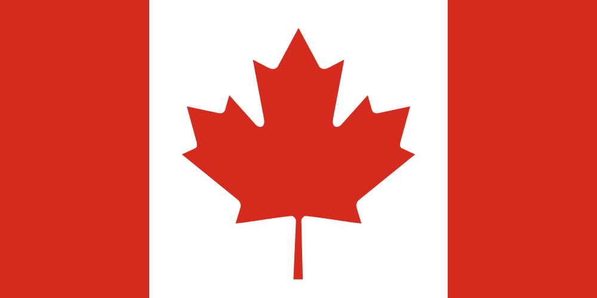
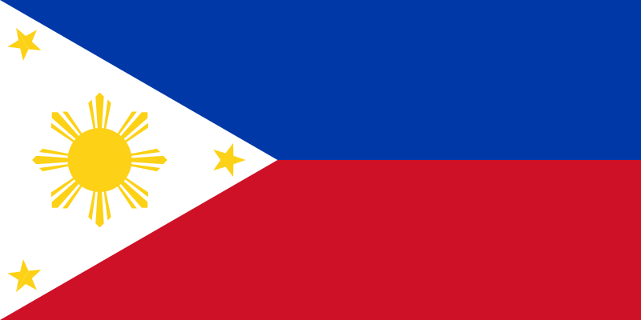

The United States has an established structure of foreign relations. It is a permanent member of the United Nations Security Council, and New York City is home to the United Nations Headquarters.
-Canada

-Australia
-New Zealand
-The Phillipines

-Japan
-South Korea
-Israel
-France
-Italy
-Germany
-Spain
Official U.S.A. Anthem & March
Anthem: The Star Spangled Banner.
March: The Stars and Stripes Forever.
Traditional American Motos:
"In God We Trust."
"E pluribus unum" (Out of many, one)
"Annuit coeptis" (He has favored our undertaking)
"Novus ordo seclorum" (New order of the ages)
Etymology
In 1507, the German cartographer Martin Waldseemüller produced a world map on which he named the lands of the Western Hemisphere the Americas in honor of the Italian explorer and cartographer Amerigo Vespucci (Latin: Americus Vespucius).
The first documentary evidence of the phrase "United States of America" is from a letter dated January 2, 1776, written by Stephen Moylan, Esq., George Washington's aide-de-camp and Muster-Master General of the Continental Army. Addressed to Lt. Col. Joseph Reed, Moylan expressed his wish to carry the "full and ample powers of the United States of America" to Spain to assist in the revolutionary war effort.
The short form "United States" is also standard. Other common forms are the "U.S.", the "USA", and "America". Colloquial names are the "U.S. of A." and, internationally, the "States". "Columbia", a name popular in poetry and songs of the late 18th century, derives its origin from Christopher Columbus; it appears in the name "District of Columbia".